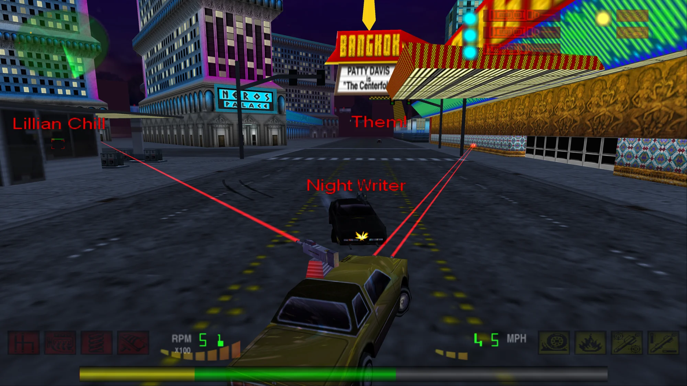
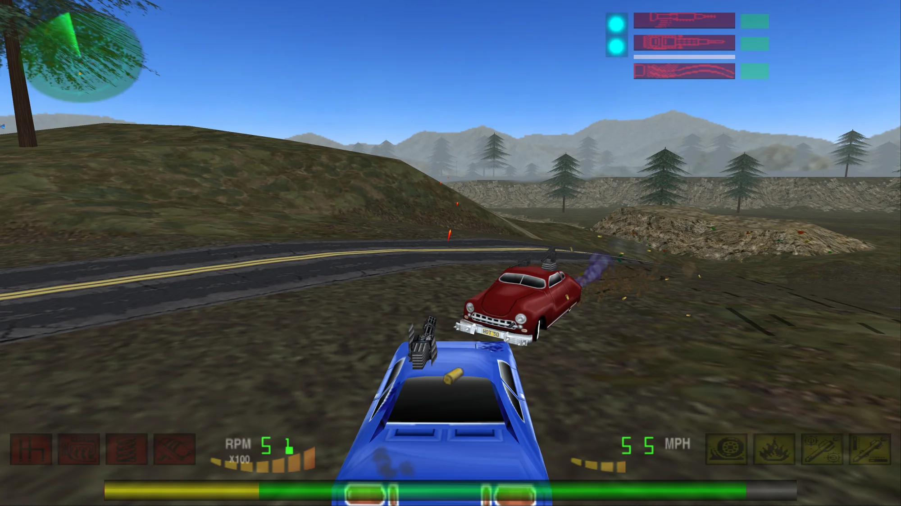
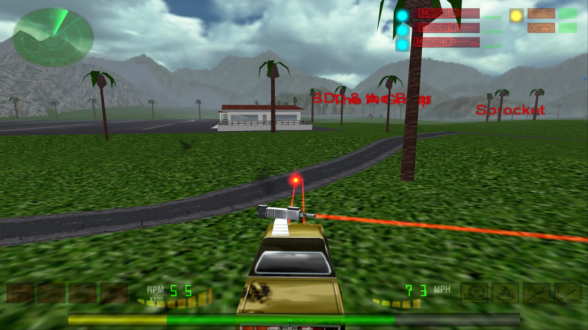
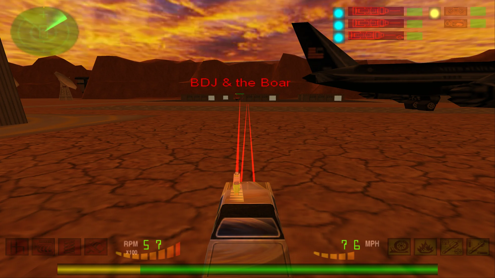
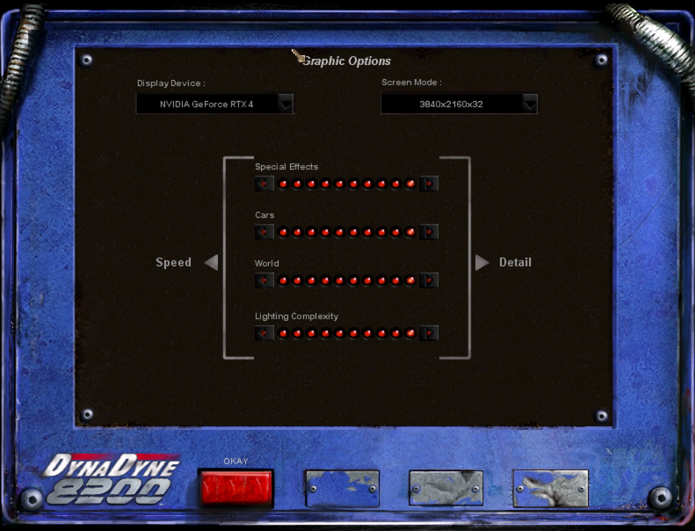

Free patch for the GOG version · Windows 10 & 11
Interstate '82 in widescreen and 4K, fixed for Windows 11




Interstate '82 only ever offered 4:3 and 5:4 resolutions and crashes on modern Windows. This patch adds 1920x1080 and 3840x2160 to the game's own video options, fixes the start-up hang, the mission-load crash and the broken key binding, gets the soundtrack playing next to the sound effects, and can triple the draw distance.
- 1920x1080 & 4KReal 16:9, Hor+, no stretching
- Windows 10 / 11Crash and key-binding fixes
- 3x draw distanceOptional, one double-click
- MIT licenseNo game files included
What the patch does
- Widescreen and 4K resolutions. The game accepts exactly four hardcoded modes: 640x480, 800x600, 1024x768 and 1280x1024. The patch widens that filter, so 1920x1080 and 3840x2160 appear under Options → Graphics. The view extends sideways (Hor+) instead of stretching, the HUD moves to the screen edges and scales with the resolution.
- Mission-load crash fixed. On Windows 10 and 11 the GOG version can crash while a mission loads. The patch contains a narrowly targeted heap fix for it.
- Key binding fixed. Modern Windows reports empty or localized DirectInput key names, so the controls screen cannot bind keys and the game complains that controls do not exist. The patch supplies the English key names the game expects.
- Start-up hang and soundtrack fixed. On current Windows 11 the GOG version can hang before it opens a window, because of the
winmm.dllGOG added to play the soundtrack. The patch brings its ownwinmm.dllin its place, which starts cleanly and plays the soundtrack next to the sound effects, which could not be heard while the music played. - No developer popups. A diagnostic message box that appears at every mission start is answered automatically.
- Borderless fullscreen through DDrawCompat. No DxWnd, no launcher: start the game as usual.

Performance is not an issue: on an RTX 4070 Ti the game runs at about 240 FPS in 1920x1080 and about 100 FPS in 3840x2160. The frame rate is not capped.
Installation
- Back up your Interstate '82 folder (GOG default:
C:\Program Files (x86)\GOG Galaxy\Games\Interstate 82). - Download
dinput.dll,winmm.dllandDDrawCompat-i82stubz.inifrom the latest release.SHA256SUMS.txtin the same release lets you verify them. - Download DDrawCompat and take its
ddraw.dll. - Put all four files into the game folder, next to
i82stubz.exe, and confirm replacingwinmm.dll. - Start the game normally and choose the resolution under Options → Graphics.
3840x2160 is only offered when your desktop is at least 3840x2160. To undo everything, delete dinput.dll, ddraw.dll and DDrawCompat-i82stubz.ini, and restore GOG's winmm.dll from your backup or with "Verify / Repair" in GOG Galaxy.
Longer draw distance (optional)
The in-game setting is already at its maximum, but the real clipping and fog distances are stored per level in i82.zfs. Download patch_viewdistance.exe from the latest release, put it next to i82.zfs and double-click it. It sets the clipping distance to 3x and the fog to 2x, which removes the fog wall without pop-in and costs no measurable performance.
The tool keeps an untouched copy as i82.zfs.original; double-click again to restore it. Other factors work from a command prompt:
patch_viewdistance.exe --clip 4 --fog 2.5
patch_viewdistance.exe --restoreTroubleshooting
The game does not start at all
No window, no error, but i82stubz.exe is in Task Manager: GOG's own winmm.dll is in the game folder instead of the patch's. End every i82stubz.exe in Task Manager and copy the patch's winmm.dll into the folder again. "Verify / Repair" in GOG Galaxy puts GOG's file back.
"Where is shell dll?" and "Shell Error!" on startup
An overlay hooks the game while it starts. RivaTuner Statistics Server (RTSS, part of MSI Afterburner) does this reliably, with or without this patch. Start the game first and RTSS afterwards, or give i82stubz.exe a profile in RTSS with Application detection level set to None.
No 1920x1080 or 3840x2160 in the options
Check that dinput.dll is in the game folder next to i82stubz.exe: it is what adds the two modes to the game. 3840x2160 is only offered on a desktop of at least 3840x2160. If your display does not report these modes itself, DDrawCompat needs them in the SupportedResolutions line of DDrawCompat-i82stubz.ini, so also check that the profile is there and not renamed.
"Unable to set your chosen screen resolution"
Usually a leftover i82stubz.exe from an earlier crash still holds the display mode. End it in Task Manager and start the game again.
Car stuck in the terrain
Press Esc, type nukeme and press Esc again to self-destruct. This is the official workaround from the game's readme.